3 EKSENLİ CNC
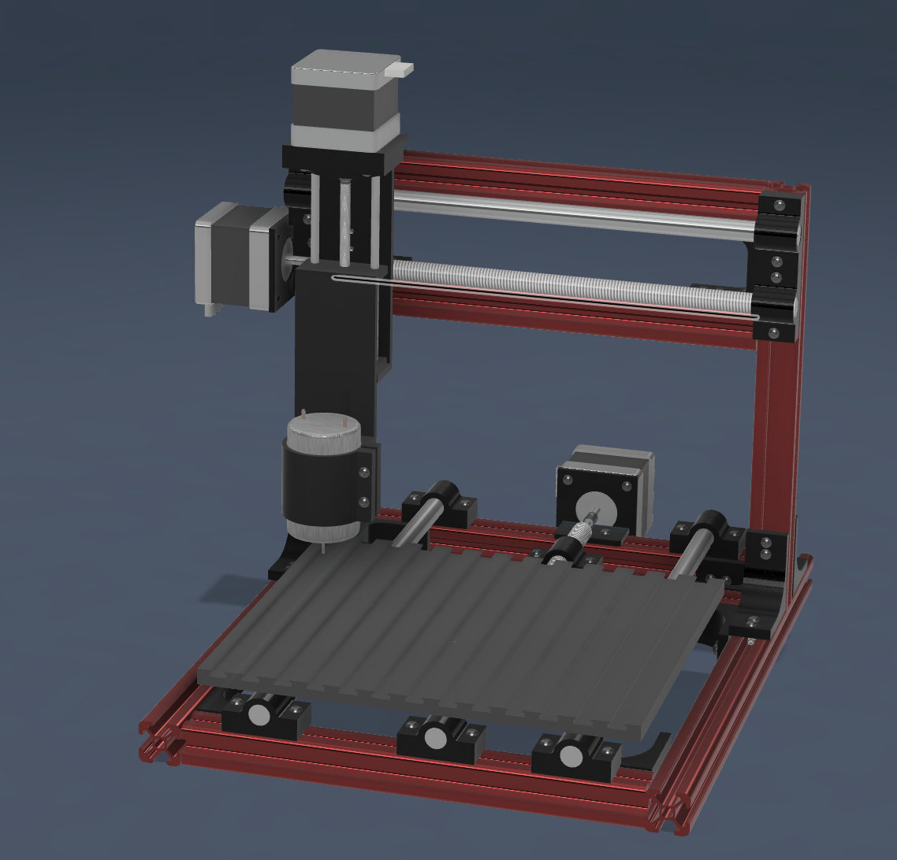
Mekanik Tasarım
Tamamen özel tasarım ve üretim bir 3 eksenli CNC freze makinesidir. Alüminyum ve PVC gibi malzemelerin işlenmesi için tasarlanmıştır. X, Y ve Z eksenlerinde step motorlar kullanılarak hassas hareket kontrolü sağlanmaktadır.
Mekanik yapıda X ekseni 200mm, Y ekseni 150mm, Z ekseni 200mm strok sunmaktadır. Çelik dişli miller kullanılarak maksimum dayanıklılık sağlanmıştır. Spindle olarak DC motor kullanılmıştır.
Mekanik Galeri
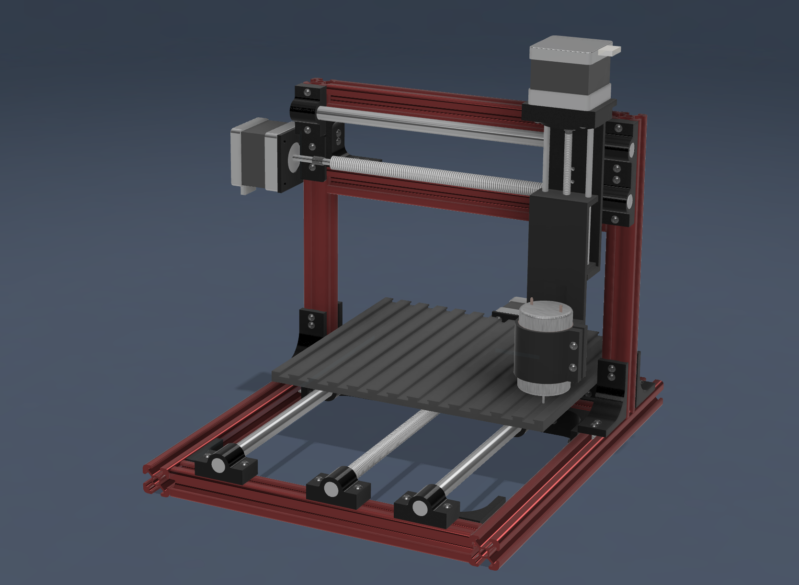
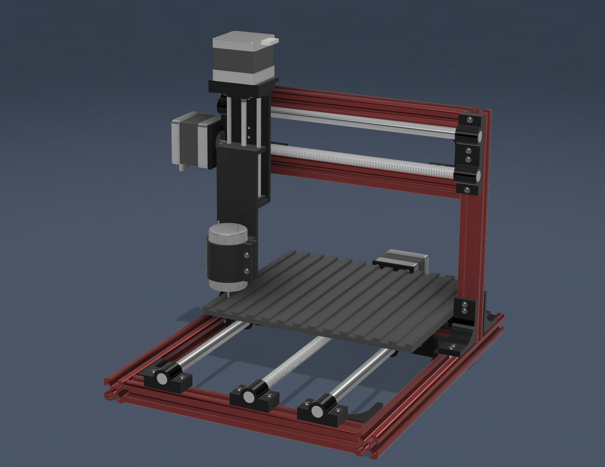
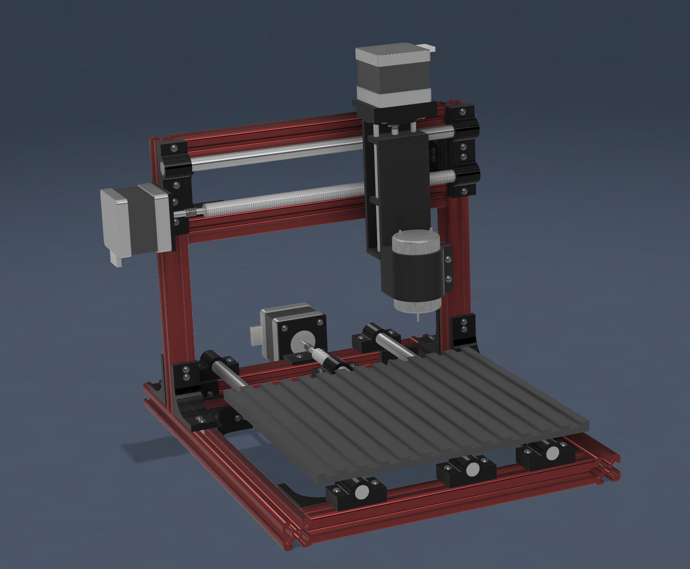
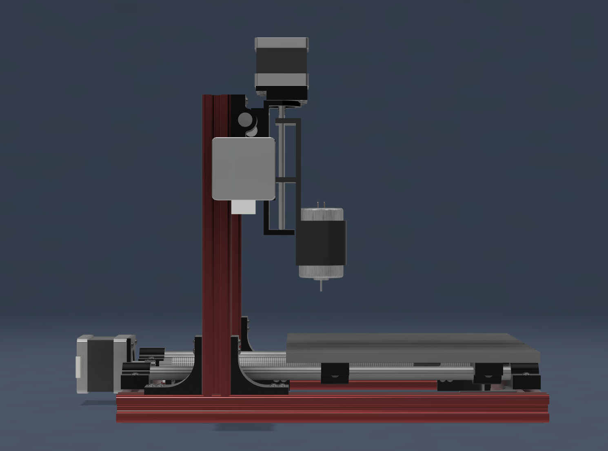
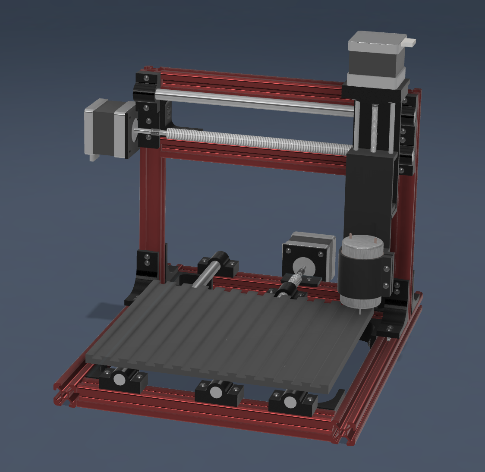
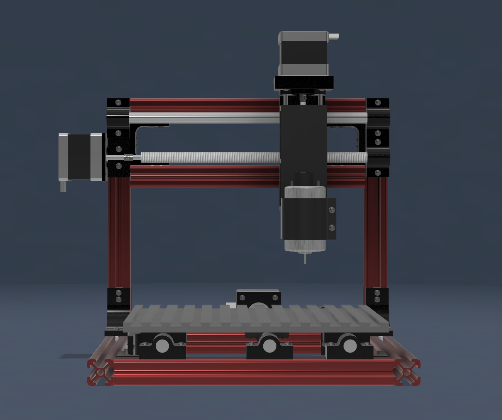
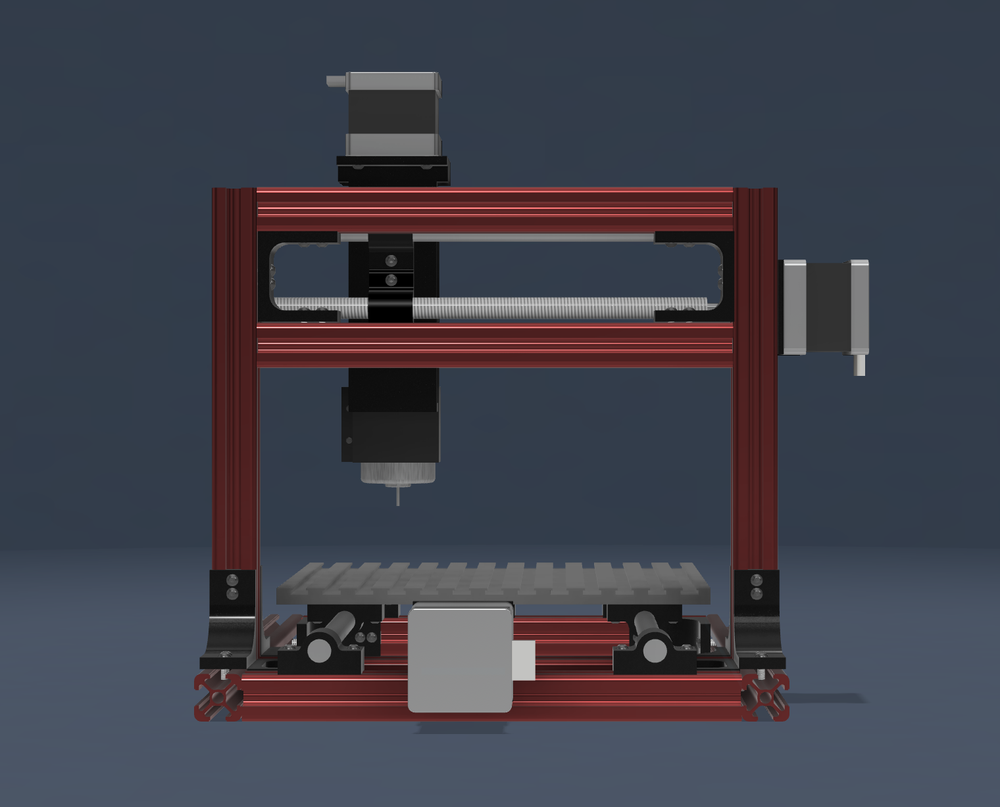
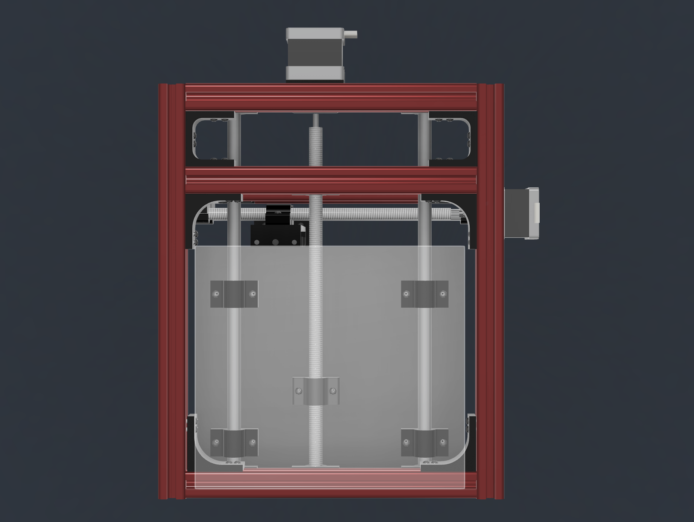
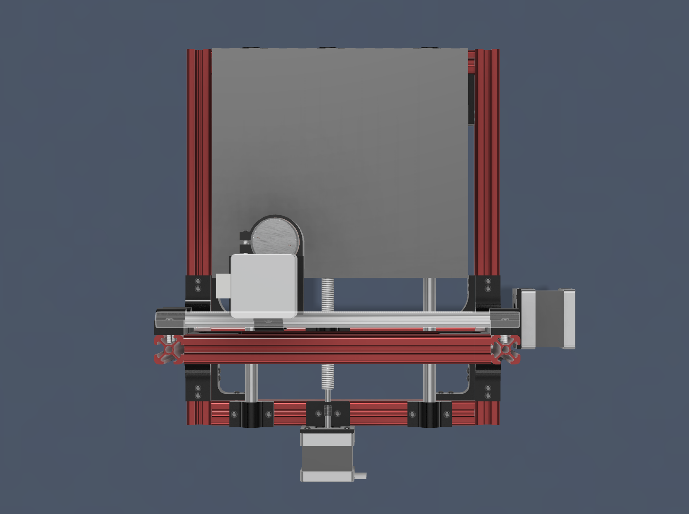
Elektronik Tasarım
Projenin bu aşamasında elektronik kısımda kontrol kartının tasarlanması, özellikleri ve kullanılan komponentleri belirteceğiz. Kontrol kartında AtMega328P mikro denetleyiciye sahip bir Arduino Nano yer almaktadır. Arduino Nano modülü kolayca değiştirilebilmesi, düşük maliyetli olması, kolay programlanabilmesi gibi bir çok avantajı yanında getiriyor. Kart 3 adet Step motoru kontrol etmeyi amaçlamaktadır. Bu nedenle 3 adet modüler motor sürücü kullanıyoruz. Kartımız 12-36V aralığında bir güç beslemesini destekliyor. Dahili LM2596 Voltaj regülatörü ile sabit 12V ile motorlar için gerekli parazitsiz besleme voltajını sağlıyor. Ayrıca 12V'u mikro denetleyicinin ihtiyacı olan 5V gerilime dönüştürmek için dahili bir LM7805 Voltaj regülasyon devresi içerir.
Kartta toplam 5 adet durum LED'i bulunmaktadır. Bu LED'ler ikisi güç indikatör LED'i diğer 3 tanesi ise motor çıkışlarını belirten LED'lerdir. Yeşil LED 12-36V gerilim ile kartın beslendiğini belirtirken kırmızı LED 5V beslemenin karta geldiğini belirtmektedir. Beyaz LED'ler ise OUT1, OUT2 ve OUT3 olmak üzere X, Y ve Z eksenlerindeki motorlara çıkış sinyali gittiğini belirtmektedir.
Elektronik Galeri
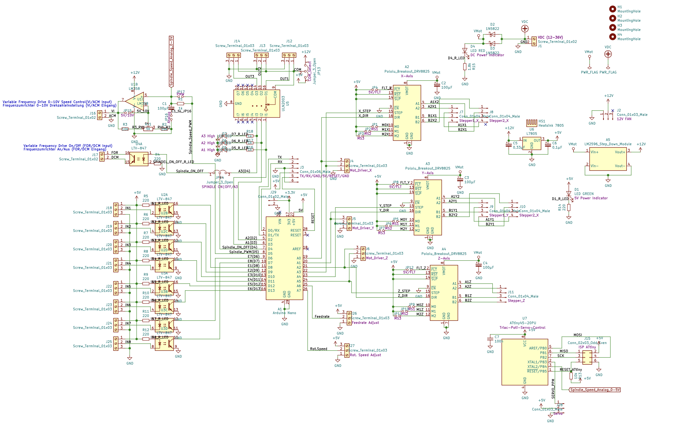
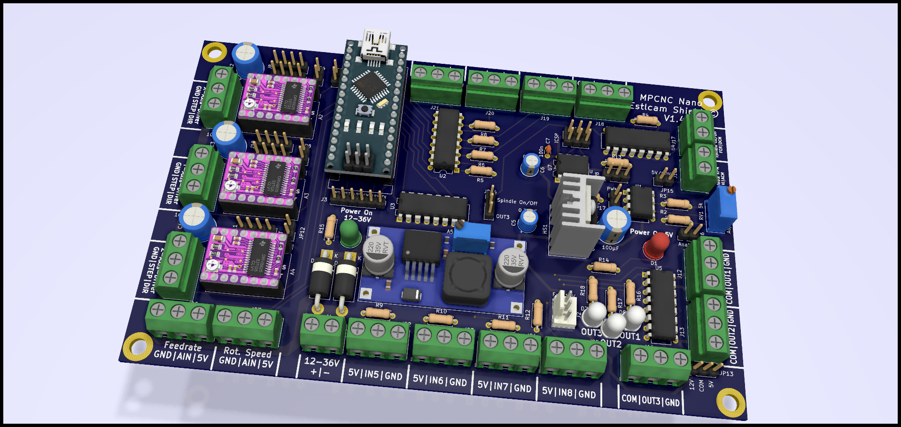
Programlama & Yazılım
Makine, GRBL firmware'i üzerinde çalışmaktadır. G-code yorumlama ve motor kontrolü için özelleştirilmiş yazılım kullanılmaktadır. Arduino IDE ile geliştirme yapılmıştır.